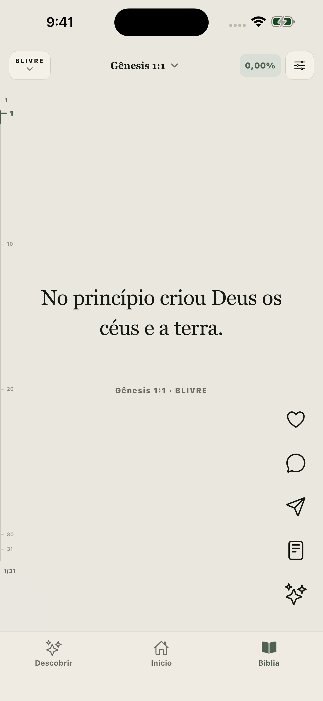

Continue de onde parou
Seu ponto de leitura fica salvo. Volte ao versículo e abra o capítulo completo quando quiser.
A Palavra no seu dia
Um jeito simples de voltar à Bíblia. Leia com calma, continue de onde parou e veja a passagem no contexto.
Em breve para iPhone e iPadFeito em português. Para ler no seu ritmo.

Mais espaço para ler
Seu ponto de leitura fica salvo. Volte ao versículo e abra o capítulo completo quando quiser.
Consulte explicações editoriais, passagens relacionadas e fontes indicadas, sem confundir o estudo com o texto bíblico.
Salve versículos e escreva notas pessoais no dispositivo. Organize a leitura com planos ou crie o seu.
Uma pausa com propósito
Widgets mantêm a Palavra por perto. O bloqueio de distrações é opcional: você escolhe se quer usá-lo.
Estamos preparando o lançamento. A disponibilidade e as condições da assinatura serão confirmadas na App Store.